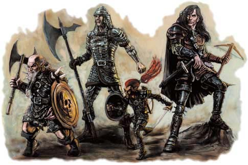

那些血统可以追溯到异界生物（outsider）的生物被称为"位面裔（planetouched）"。由于其异界生物的传承，位面裔拥有一些不寻常的特性，并且这些特质会在最初位面裔生物的后代中显现数代之久。尽管下文介绍的梅卢斯（maeluth）、机枢匠（mechanatrix）、烁影（shyft）和微智者（wispling）各自拥有共性，但它们倾向于采纳它们出生时所处的文化信仰。
本节描述的每种位面裔都有不同的战斗策略。然而，它们都拥有一组共同的特质。
异界生物特性 (Outsider Traits)：位面裔拥有黑暗视觉（60 英尺范围），并且它们不能被复活（raise）或复生（resurrect）（不过祈愿术（wish）或神迹术（miracle）可以恢复生命）。
梅卢斯的偏好职业是牧师。机枢匠的偏好职业是战士。不冒险的机枢匠更可能是专家（expert）而非平民（commoner）。烁影的偏好职业是游荡者。微智者的偏好职业也是游荡者。
中型异界生物

| 生命骰： | 1d8+2 (6 hp) |
| 先攻： | �C1 |
| 速度： | 20 英尺 |
| 防御等级： | 13 (�C1 敏捷，+3 镶钉皮甲，+1 小圆盾)，接触 9，措手不及 13 |
| 基本攻击／擒抱： | +1/+1 |
| 攻击： | 战斧 +2 近战，或轻弩 +0 远程 |
| 全力攻击： | 战斧 +2 近战，或轻弩 +0 远程 |
| 伤害： | 战斧 1d8，轻弩 1d8 |
| 面宽／触及： | 5 英尺./5 英尺. |
| 特殊攻击： | ― |
| 特殊能力： | 矮人特性，邪魔锤击，异界生物特性 |
| 豁免： | 强韧 +4，反射 +1，意志 +2 |
| 属性： | 力量 11，敏捷 8，体质 15，智力 10，感知 11，魅力 10 |
| 技能： | 估价 +0（+2 石材或金属），平衡 +3，攀爬 +4，专注 +6，手艺（金属加工） +6，手艺（石工） +6，跳跃 +4，知识（建筑与工程） +4，生存 +4 |
| 专长： | 专攻武器（战斧） |
| 地域： | 任何地底 |
| 组织： | 单独 |
| 挑战等级： | 1/2 |
| 宝物： | 标准 |
| 阵营： | 通常守序邪恶 |
| 进化： | 按职业等级 |
| 等级调整： | +1 |
梅卢斯（Maeluths）是具有矮人（dwarves）和魔鬼（devils）血统的位面裔。
梅卢斯看起来像强壮的矮人，但带有暗示其魔鬼玷污血统的邪魔特征。常见的梅卢斯特征包括红色眼睛、异常细长的手指和几乎无毛的身体。梅卢斯偏爱深色，并经常穿着尖刺盔甲。
尽管在许多方面与其矮人祖先相似，但由于其炼狱血统，梅卢斯更擅长社交互动。它们经常运用其天生的社交技能在矮人社会中获取权位。
梅卢斯使用通用语（Common）、矮人语（Dwarven）和地底通用语（Undercommon）。
梅卢斯在战斗中直接且有序。当遇到复数敌人时，它们会运用复杂的阵型和战略。
矮人特性(Dwarf Traits) (Ex)：梅卢斯在攻击兽人（orcs）和地精类生物（goblinoids）时拥有+1种族攻击加值，对抗法术和类法术能力的豁免检定拥有+2种族加值，对抗所有毒素的强韧豁免检定拥有+2种族加值，对抗巨人（giants）时拥有+4闪避加值。它还具有60英尺黑暗视觉、石之敏锐（石之敏锐：察觉不寻常石制品的检定拥有+2种族加值；当处于10英尺范围内时，可以如同主动搜索般检定以察觉不寻常的石制品，并且可以像游荡者一样使用搜索（Search）技能发现石制品陷阱；并能感知深度），以及估价（Appraise）检定和与石材或金属相关的工艺（Craft）或专业技能（Profession）检定拥有+2种族加值。
邪魔锤击(Fiend Hammer)(Su)：每日一次，梅卢斯可以赋予一把近战武器邪恶特殊能力（unholy special ability）。此效果持续 1 分钟。
中型异界生物
| 生命骰： | 1d8+1 (5 hp) |
| 先攻： | �C1 |
| 速度： | 20 英尺 |
| 防御等级： | 18 (�C1 敏捷，+6 混织铁甲，+2 大型钢盾，+1 天生)，接触 9，措手不及 18 |
| 基本攻击／擒抱： | +1/+1 |
| 攻击： | 战斧 +1 近战 |
| 全力攻击： | 战斧 +1 近战 |
| 伤害： | 战斧 1d8 |
| 面宽／触及： | 5 英尺./5 英尺. |
| 特殊攻击： | 电爪 |
| 特殊能力： | 寒冷抗力 5，闪电疗愈，火焰抗力 5，异界生物特性 |
| 豁免： | 强韧 +5，反射 +1，意志 +2 |
| 属性： | 力量 10，敏捷 8，体质 13，智力 13，感知 10，魅力 9 |
| 技能： | 工艺（任意三项） +5，知识（任意一项） +5，知识（建筑与工程） +5，专业（攻城工程师） +9，聆听 +4，搜索 +5，侦查 +6 |
| 专长： | 强韧加强 |
| 地域： | 任何陆地和地底 |
| 组织： | 单独或小队（2�C4 个） |
| 挑战等级： | 1/2 |
| 宝物： | 标准 |
| 阵营： | 通常守序中立 |
| 进化： | 按职业等级 |
| 等级调整： | +1 |
机枢匠（Mechanatrixes）是其血统可以追溯到居住在机械境（Mechanus）位面的奇异发条生物的位面裔。
机枢匠的外表大部分是人类，但它们拥有一个或多个机械或无机的特征。大多数机枢匠拥有光滑的皮肤，带有微弱的金属光泽。它们的行为冰冷理性，对生活抱持务实的态度。
与其天性相符，机枢匠对所有种类的机械物体都有亲和力。它们对工程学和所有类型的手艺有着天生的理解。更具尚武精神的机枢匠会成为出色的攻城工程师。
与其他位面裔生物一样，机枢匠从未真正融入任何社会。大多数人类社会避讳它们，而那些来自机械境的生物则认为它们受到了玷污且不纯净。因此，它们常常是独行者，但很少因缺乏社交接触而困扰。
大多数机枢匠是法律的坚定信徒，并尽其所能对抗混乱，为动荡地区带来秩序。
尽管技艺精湛，机枢匠仍倾向于避免战斗，因为它们认为战斗具有破坏性和浪费性。然而，当它们被迫战斗时，会以精明的战术发起攻击。
机枢匠不仅免疫闪电，而且实际上能被其治疗。因此，它们会故意挑衅任何使用闪电攻击的对手。
电爪(Shocking Grasp)(Sp)：机枢匠每日可使用一次电爪（shocking grasp），如同由 1 级术士或机枢匠自身职业等级（取较高者）施放。
闪电疗愈 (Electricity Healing )(Ex)：由于机枢匠的闪电亲和力，任何针对它的闪电攻击每造成 3 点伤害（按本应造成的伤害计算），就能治疗它 1 点伤害。机枢匠对闪电效果无豁免检定。
技能：机枢匠在侦查检定上拥有+2种族加值，在知识（建筑与工程）检定上拥有+4种族加值。
中型异界生物
| 生命骰： | 1d8 (4 hp) |
| 先攻： | +5 |
| 速度： | 30 英尺 |
| 防御等级： | 14 (+1 敏捷，+3 镶钉皮甲)，接触 11，措手不及 13 |
| 基本攻击／擒抱： | +1/+0 |
| 攻击： | 短剑 +0 近战，或轻弩 +2 远程 |
| 全力攻击： | 短剑 +0 近战，或轻弩 +2 远程 |
| 伤害： | 短剑 1d6�C1，轻弩 1d8 |
| 面宽／触及： | 5 英尺./5 英尺. |
| 特殊攻击： | ― |
| 特殊能力： | 寒冷抗力 5，幻化灵体，火焰抗力 5，昏暗视觉，异界生物特性，音波抗力 5 |
| 豁免： | 强韧 +2，反射 +3，意志 +3 |
| 属性： | 力量 8，敏捷 13，体质 10，智力 10，感知 13，魅力 9 |
| 技能： | 唬骗 +3，躲藏 +8，聆听 +5，潜行 +8，搜索 +4，察言观色 +3，手上功夫 +4，侦查 +5 |
| 专长： | 精通先攻 |
| 地域： | 任何陆地和地底 |
| 组织： | 单独、团伙（2�C8 个），或氏族（11�C20 个） |
| 挑战等级： | 1 |
| 宝物： | 标准 |
| 阵营： | 通常中立 |
| 进化： | 按职业等级 |
| 等级调整： | +3 |
烁影（Shyfts）是具有以太界（Ethereal Plane）原生种族血统的位面裔生物。它们既不完全属于以太界，也不完全属于物质界（Material Plane），因此拥有在两者之间来回穿梭的能力。
烁影的外表看起来是普通的寻常人类。事实上，它们身上几乎一切都令人难以记住并容易被忽略。它们偏好穿着不引人注目的深色朴素衣物。烁影似乎并不介意自己如此不起眼，反而将其作为自身的优势加以利用。它们是优秀的间谍，因为它们可以从安全的以太界偷听对话，并将听到的任何信息卖给出价最高者。烁影也以擅长暗杀、盗窃和其他犯罪勾当而闻名。
烁影使用通用语（Common）。
烁影很少直接攻击对手，因为它们更倾向于利用潜行、伏击和陷阱来赢得战斗。它们使用幻化灵体（ethereal jaunt）能力潜伏在以太界中，侦查发动攻击的最佳时机，或者从物质界的威胁中逃离。
幻化灵体 (Sp) (Ethereal Jaunt (Sp)): 烁影每日可使用一次幻化灵体（ethereal jaunt），如同由 9 级牧师或烁影自身职业等级（取较高者）施放。
技能：烁影在躲藏和潜行检定上拥有+4种族加值。
小型异界生物
| 生命骰： | 1d8 (4 hp) |
| 先攻： | +6 |
| 速度： | 20 英尺 |
| 防御等级： | 16 (+1 体型，+2 敏捷，+2 皮甲，+1 小圆盾)，接触 13，措手不及 14 |
| 基本攻击／擒抱： | +1/�C4 |
| 攻击： | 短剑 +1 近战，或轻弩 +4 远程 |
| 全力攻击： | 短剑 +1 近战，或轻弩 +4 远程 |
| 伤害： | 短剑 1d6�C1，轻弩 1d8 |
| 面宽／触及： | 5 英尺./5 英尺. |
| 特殊攻击： | ― |
| 特殊能力： | 易容术，半身人特性，异界生物特性 |
| 豁免： | 强韧 +3，反射 +5，意志 +3 |
| 属性： | 力量 8，敏捷 14，体质 11，智力 13，感知 11，魅力 10 |
| 技能： | 唬骗 +4，攀爬 +5，易容 +4，躲藏 +10，跳跃 +5，聆听 +6，潜行 +8，搜索 +5，侦查 +4 |
| 专长： | 精通先攻 |
| 地域： | 任何 |
| 组织： | 单独 |
| 挑战等级： | 1/2 |
| 宝物： | 标准 |
| 阵营： | 通常邪恶（任意） |
| 进化： | 按职业等级 |
| 等级调整： | +1 |
微智者（Wisplings）是具有半身人（halflings）和恶魔（demons）血统的位面裔（planetouched）。
凭借沾染了恶魔之火与混乱的血统，半身人族的这一分支体现了所有微小、迅捷和欺诈的特征。微智者很少安静地坐着，它们的恶作剧和玩笑从残忍到致命不一而足。
微智者浅棕色的皮肤、鲜红的头发和棱角分明的面容使其与其他小型类人生物区分开来。尽管其恶魔血统赋予了它们超越许多其他种族的潜行能力，微智者却偏爱穿着鲜艳的衣物，这使得它们在人群中总是格外醒目。
微智者使用通用语（Common）。
速度、本能和残忍使得微智者远比其体型和瘦弱的身躯所暗示的更为致命。微智者几乎总是从伏击中发动攻击，并试图在被更大的敌人围困之前从战斗中消失。
易容术(Change Self)(Su)：微智者每日可使用一次易容术（change self），如同由 1 级术士施放的该法术。（译者注：此次已经进行3r升级） 半身人特性 (Halfling Traits)(Ex): 微智者对抗恐惧的豁免检定拥有+2士气加值，所有豁免检定拥有+1种族加值，使用投掷武器攻击时拥有+1种族攻击加值，并在攀爬、跳跃、聆听和潜行检定上拥有+2种族加值。